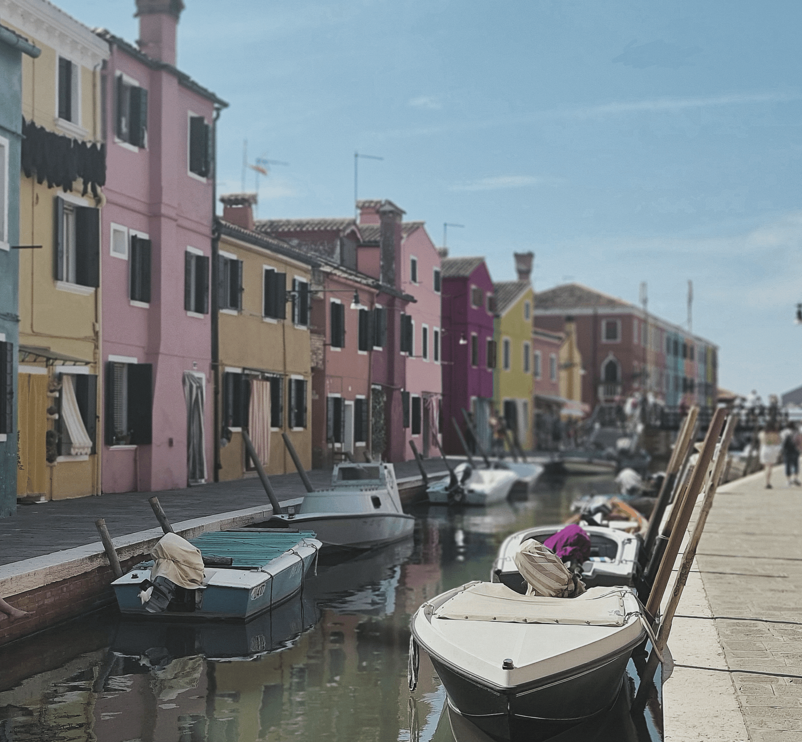
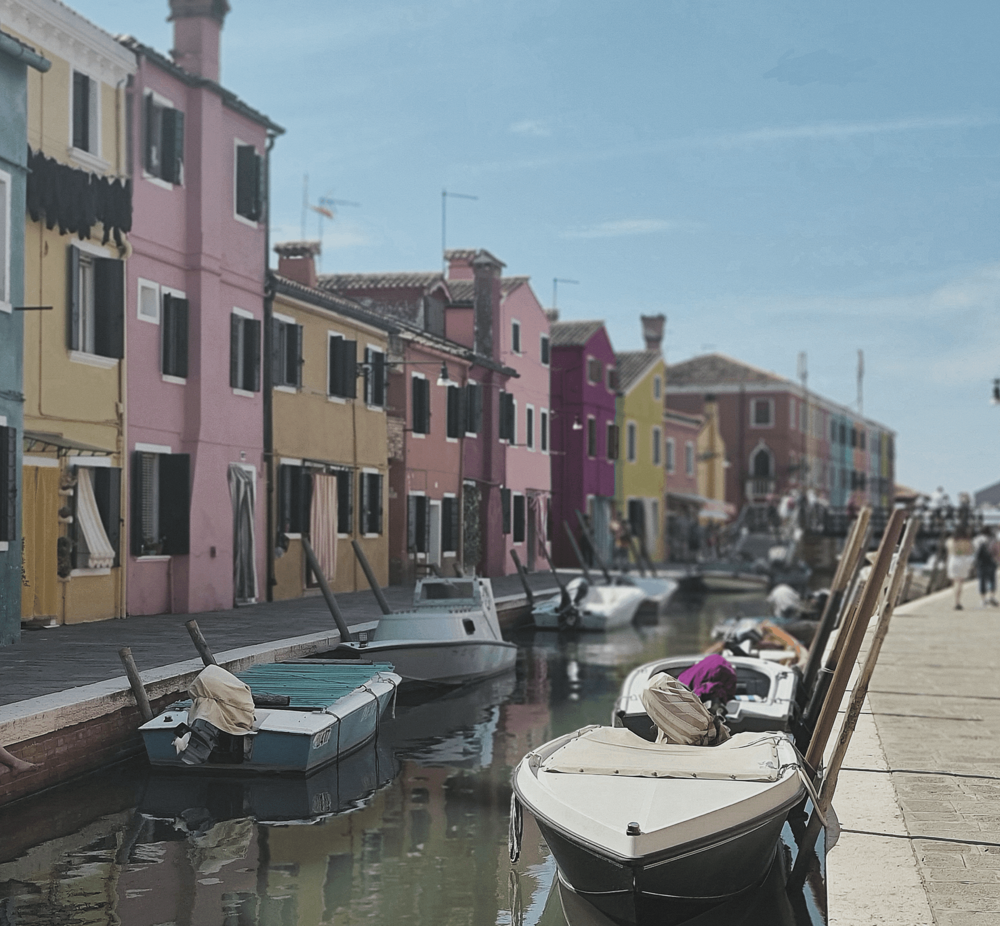

Jag tyckte att originalbilden var väldigt fin, men jag tyckte att den var mörk.
Så jag ökade ljusstyrkan på bilden, så att den inte skulle vara så mörk.
sedan så ökade jag kontrasten också. Detta så att detaljerna i färgerna skulle synas mer.
 

Jag började med att ändra färgen på ett av husen och på en detalj på en av båtarna.
Detta för att detaljerna på de olika bilderna ska "höra ihop".
Jag la till en ny mask efter detta och ökade konstrasten på bilden.
Detta gjorde jag för att jag tyckte att bilden såg lite "dimmig" ut.
Det sista jag gjorde var att ta bort flygplanet som fanns längst upp till höger.
Detta gjorde jag för att flygplanet var suddigt.


Jag använde crop-verktygen för att dra ne linje och göra bryggan rak.
När jag gjorde detta så var jag tvungen att ta bort delar av bilden.
Jag ökade ljuset litegrann och ökade kontrasten för att bilden skulle kännas varmare.
Jag ökade saturationen så att färgerna skulle "poppa" lite mer.
Jag bytte färg på det blå huset i mitten till rosa. Detta så att alla bilder ska "höra ihop".